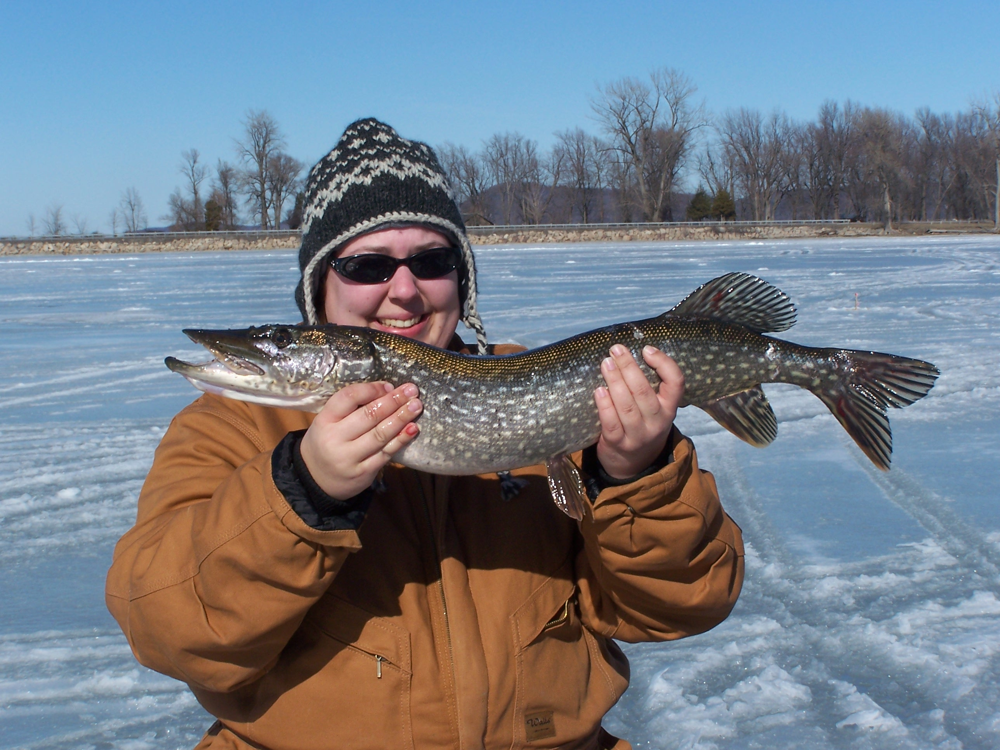

I've got a few hobbies, notably fiber arts (knitting and sewing), and fishing.
Knitting and Fiber Arts
When I'm not fishing, I am almost always creating. I enjoy knitting, sewing, quilting, and spinning (making yarn).
 I have been knitting for about 8 years so far, and I have made some impressive projects. My greatest project is a knitted king sized quilt
I made for my Sister-in-Law and her wife. It took me about 18 months, and is probably the greatest thing I'll ever make.
I have been knitting for about 8 years so far, and I have made some impressive projects. My greatest project is a knitted king sized quilt
I made for my Sister-in-Law and her wife. It took me about 18 months, and is probably the greatest thing I'll ever make.
When I'm looking for new knitting patterns, I often go to ravelry.com. Ravelry is an online pattern and project database with forums for collaboration and discussion.
Fishing and Kayaking
 I enjoy fishing off my kayak and on the ice. During the summer I target bass or walleye, and in the winter it's all about the perch and pike. My kayak is fully kitted for fishing, and glides through the water easily.
 I particularly enjoy getting out on the water
early in the morning, when the water is calm and the sun isn't as strong.
I particularly enjoy getting out on the water
early in the morning, when the water is calm and the sun isn't as strong.